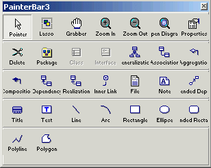

The PowerDesigner View toolbar is named PowerBar2 in the plug-in and the PowerDesigner Repository toolbar is named PowerBar3. A PowerBar is always present by default in a PowerBuilder session, even when a plug-in painter is not open. PainterBars display only when the current PowerBuilder painter is a class diagram.
Table 4-3 shows the names of PowerDesigner toolbars supported by the plug-in and their corresponding names in the PowerBuilder user interface.
Figure 4-5 shows the Palette toolbar in the plug-in. Other PowerDesigner toolbars are not currently supported by the PowerDesigner plug-in.

When you add classes to the class diagram using the plug-in's PainterBar4 (PowerBuilder) toolbar, default propertes are automatically assigned to the new classes. If you add the same classes using the PowerBuilder toolbar in PowerDesigner, default properties are not assigned.
The plug-in's PowerBar2 (View) toolbar has an additional toolbar button that opens the Plug-in Options dialog box. These options are available for the plug-in, but not for PowerDesigner. You can also access the Plug-in Options dialog box from the Tools>Plug-in Options menu when a class diagram has focus.
This part describes how to work with PowerScript targets in painters, how to set properties for an application, and how to manage PowerBuilder libraries.